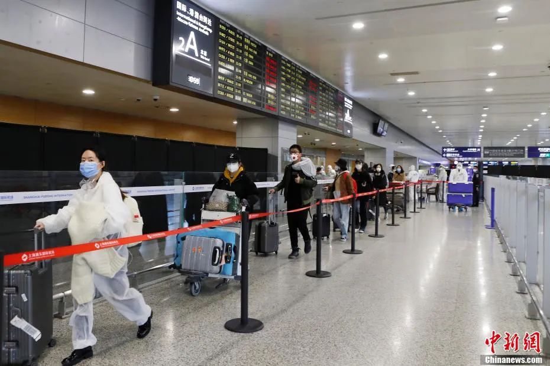

肺炎日记|3月16日：防入境疫情，中国高筑长城
原文链接 备份链接 【财新网】（记者 黄蕙昭 综合）一线城市正面临压力：连续出现境外输入病例后，多地全面升级防控措施，并对瞒报者加大刑罚力度。3月11日至今，全国陆海空口岸入境人员日均12万人次，而境外疫情“重灾区”回国者共达6.7万余人 …
 据国家卫健委官网消息，3月21日0—24时，31省份新增报告境外输入确诊病例45例(上海14例，北京13例，广东7例，福建4例，江苏2例，河北、浙江、江西、山东和四川各1例)。截至3月21日24时，累计报告境外输入确诊病例314例。
据国家卫健委官网消息，3月21日0—24时，31省份新增报告境外输入确诊病例45例(上海14例，北京13例，广东7例，福建4例，江苏2例，河北、浙江、江西、山东和四川各1例)。截至3月21日24时，累计报告境外输入确诊病例314例。
境外输入风险持续加大，北京、上海、广州、深圳日前相继发布通知，进一步升级口岸防控措施。

资料图：北京市一境外进京人员集中观察点。中新社记者 侯宇 摄

北京：23日起，所有到北京的国际客运航班均从12个指定点入境
据民航局网站消息，民航局等五部门22日发布公告：自3月23日零时(北京时间)开始，所有目的地为北京的国际始发客运航班均须从天津、石家庄、太原、呼和浩特、上海浦东、济南、青岛、南京、沈阳、大连、郑州、西安12个指定的第一入境点入境。各航空公司航班指定的第一入境点可以在民航局、航空公司官网上查询。
乘坐上述国际航班的旅客在第一入境点实施检疫并办理入境手续，行李清关。检疫符合登机条件的旅客可搭乘原航班入京。腹舱所带货物在北京清关。
目的地为北京的国际航班指定第一入境点的安排及相关措施将根据疫情变化情况适时调整。
上海：入境来沪人员实施100%核酸检测
据上海市政府新闻办公室官方微博消息，在22日举行的上海市疫情防控工作领导小组新闻发布会上，上海市卫健委表示，上海已经对所有来自或途经重点国家和地区的入境来沪人员实行100%隔离。为了进一步加强口岸防控，除集中隔离人员外，上海将对所有来自非重点国家和地区的入境来沪人员实施100%新冠病毒核酸检测。

资料图：入境人员从上海浦东机场T2航站楼国际到达层抵达。殷立勤 摄
广州：这两类来穗人员实现核酸检测全覆盖
据广州市人民政府官网消息，广州市新型冠状病毒肺炎疫情防控指挥部3月22日发布关于继续做好疫情防控工作的通告。通告要求，对所有从境外(不含港澳台)经广州口岸入境的人员，以及经港澳台地区和市外口岸入境来穗且来穗前14天内有外国旅居史的人员，其目的地为广州的，实现核酸检测全覆盖，并一律实施14天居家或集中隔离医学观察。
通告明确，上述人员隔离期间一律不得外出，14天后无症状且再次核酸检测为阴性的，方可解除医学观察，集中隔离医学观察食宿费用自理。居家隔离医学观察人员违反规定的，转为集中隔离医学观察，并承担相应责任。请上述人员配合做好口岸筛查、专车接送、社区健康管理等工作。
深圳：来粤前14天内有国外旅居史的人员均进行核酸检测
据公众号“深圳发布”，在3月21日举行的深圳疫情防控工作新闻发布会上，深圳市口岸办副主任贺群介绍：
根据省防控境外输入指引第七版的意见，从3月21日起，所有从境外经广东口岸直接入境的人员以及经港澳台地区和省外口岸入境来粤且来粤前14天内有国外旅居史的人员，其目的地为深圳的，无论外国公民还是中国公民均一视同仁一律实行口岸入境卫生检疫核酸检测医学排查，集中接送到目的地社区安排14天隔离等防控措施。其中核酸检测免费，集中接送的交通工具免费，但集中隔离期间的食宿费用由个人自理。
对持港澳通行证、回乡证等证件从深圳湾口岸来深的人员，如果过关前14天内没有外国旅行居住史的可不用实施疫情防控措施。
对于入境来深人员中的特殊群体，如14周岁以下的未成年人、孕产妇、患有基础性疾病的人员将采取人性化管理的原则给予妥善安排。
广东首例境外输入关联病例情况：系土耳其输入病例密接者
据广州市卫健委官方微博消息，2020年3月21日0时至24时，广州市报告新冠肺炎新增确诊病例3例，其中菲律宾输入1例、土耳其输入1例、与土耳其输入关联1例。
据介绍，土耳其输入关联病例金某，是土耳其输入确诊病例林某的密切接触者，属境外输入关联病例。
3月21日，疾控部门对金某进行流行病学调查时，对林某采样检测，检测结果为新冠病毒核酸阳性。
土耳其输入确诊病例林某的活动轨迹为：3月9日晚，从土耳其伊斯坦布尔乘坐TK0068航班(头等舱02A)经泰国曼谷转乘CZ364航班(头等舱1K)，于当天深夜抵达广州白云国际机场入境，机场检测体温正常。按当时入境人员管理规定，不属于入境重点排查和社区健康服务管理对象。随后从机场乘坐朋友私家车返回家中。林某回国后大部分时间在家，偶尔在家附近活动， 全程有佩戴口罩。
国家卫健委：严防境外疫情输入！
国家卫生健康委新闻发言人、宣传司副司长米锋在22日的国务院联防联控机制新闻发布会上表示：截至3月21日，有19个省份报告境外输入病例，其中最近7天内，有9个省份报告首例境外输入病例，病例来源国数量从12个增加到22个。
目前，全球疫情已蔓延到180多个国家和地区，要严防境外疫情输入，按规定落实检疫、转运、治疗、隔离等措施，确保闭环运作。
文章来源：中国新闻网


推荐阅读
 点击大图 |纽约告急！美国确诊数据翻番，“富人优先检测”引发巨大争议
点击大图 |纽约告急！美国确诊数据翻番，“富人优先检测”引发巨大争议

点击大图 | 昨天，杭州景区堵成这样！北京市民排队赏春，成都的夜亮了，湖北也渐渐动了起来…****

原文链接 备份链接 【财新网】（记者 黄蕙昭 综合）一线城市正面临压力：连续出现境外输入病例后，多地全面升级防控措施，并对瞒报者加大刑罚力度。3月11日至今，全国陆海空口岸入境人员日均12万人次，而境外疫情“重灾区”回国者共达6.7万余人 …
原文链接 备份链接 【财新网】（记者 张兰太）全国境内疫情呈现向好势头，3月6日0-24时，31个省份和“重灾区”湖北新增确诊病例双双首度降至两位数（共99例，其中湖北74例）。疫情防控取得积极成效，但近期除湖北外的其他30个省份的日新增 …
原文链接 备份链接 【财新网】（记者 赵今朝）国内新增病例持续低位，但境外输入病例呈现快速增长态势，疫情倒灌的危险加剧。目前，到中国境外游客中，海外留学生引人关注，且数量较多。 北京已连续15天无新增报告本地确诊病例，境外输入病例留学生超 …
原文链接 备份链接 【财新网】（记者 王婧 黄姝伦）广东省卫健委今日（3月22日）通报，广州出现一例境外输入关联病例。这是中国境内首次通报境外输入关联病例。 广州市卫健委通报了具体情况。该病患姓金，现年54岁。3月17日起，金某自觉肌肉酸 …
原文链接 备份链接 “ 3月21日0—24时，31个省（自治区、直辖市）和新疆生产建设兵团报告新增确诊病例46例，其中45例为境外输入病例，唯一一例本土新增病例来自广东省，系首例境外输入关联病例。 ” 3月21日0—24时，31个省（自治 …